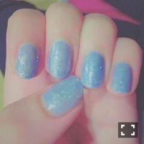

| 2016/06 23 Thu | 斎藤ちはる あまのじゃく現象とは。(´>∀<｀)ゝ |
ちはるーむへようこそ！
誰でしょうか〜
クイズだよ〜
じゃーん！！
飛鳥！！
齋藤飛鳥！！
3110のメンバー！！
アイドルで最小の顔の持ち主！！
飛鳥は目と前髪だけでもなんか可愛い。
よしよししたくなる小動物みたい。
飛鳥はこう見えて結構高らかに笑う！
そして笑ってる時が凄い楽しそう！
一見クール系な女の子の
笑顔って、キュンとくるよね。
みなさん、共感できるよね。ね。
-------------------------♡
明日の朝がとてつもなく早いんだ〜！
3:30起き！٩(˙▿˙)۶
わー！
でも、朝が早いって思えば思うほど
のんびり過ごしたくなる時ってない？？
ゆっくりお風呂はいったり
特に何もせずゴロゴロしちゃったり。
テスト期間中に
突然部屋を片付けたくなったりとか
突然漫画読み返したくなったりとか。
あるよね〜〜
これなに現象って言うんだろ？？
あまのじゃく現象？？
あまのじゃく現象だから、
突然昔の写真漁ってみたり。
1年前の私。
ん？あんまり変わってない？笑
成長してない？？⸜( ⌓̈ )⸝
でも、ネイルするのが好きなのは変わってない！！
この時は赤のネイルしてるけど
今は水色ラメラメ♡

基本的にお仕事の時はネイルできないんだけど
個別握手会のときとか、
撮影のお仕事がないときには
セルフネイルしてるんだ〜\( ˆoˆ )/
ネイルしてると指先まで意識するから
手振りが綺麗になる気がする。
ネイルが可愛いと気分も上がるし
何でも頑張ろうって思えちゃうから不思議だよね！
女の子はそんな小さなところで士気を高めてる。
人生楽しいことばかりじゃないから
下向いたときに指先が可愛いと少し嬉しくなるもんね。
あれれ〜〜
本格的に眠くなってきた。。
寝なきゃ(｡-_-｡)。。
明日のお仕事楽しみ〜！
どんなのが出来上がるかな〜！
おやすみ♡
斎藤ちはる